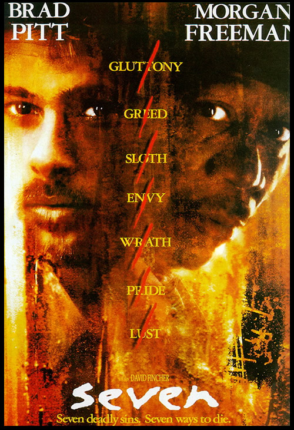

Seven
1995
Seven is Fincher's second major film release following the release of Alien 3 in 1993. Seven is a neo-noir drama about a serial killer who exacts his murders inline with the seven deadly sins. Seven stars: Brad Pitt, Morgan Freeman, Gwenyth Paltrow, and Kevin Spacey